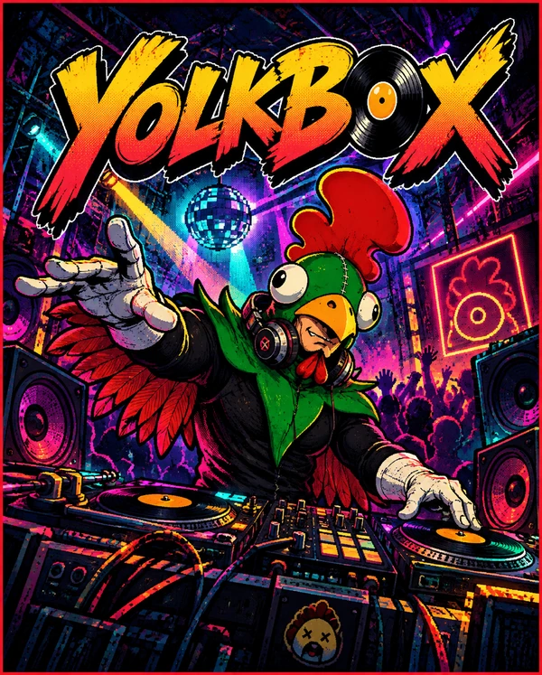
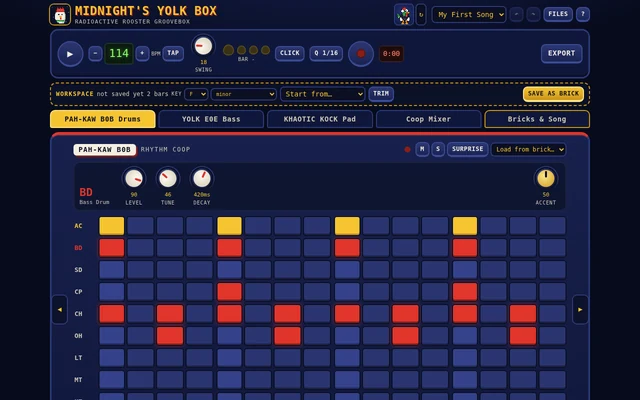
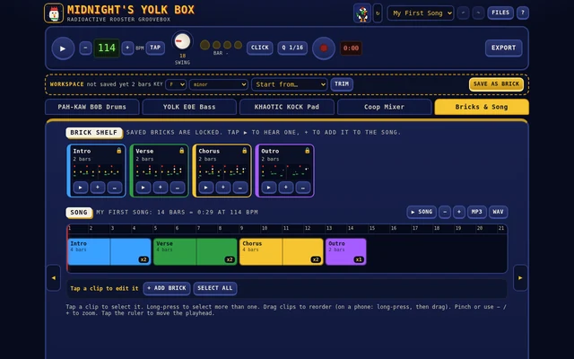

YOLK BOX

App
Midnight's Yolk Box
Midnight's Yolk Box · Groovebox in your browser
Radioactive Rooster's groovebox runs right in your browser. Program beats on the PAH-KAW B0B, a classic analog-style drum machine. Write squelchy bass lines on the YOLK E0E bass synth. Drag a finger across the Khaotic Kock pad to play notes in key, then loop what you played. Save a groove as a brick and snap bricks together into a song. Export it as an MP3 when it's done. A rooster dances on the beat the whole time to keep you honest. It works offline after the first visit.


🎮 Controls
- Phone
- Swipe sideways or tap the tabs to switch machines. Drag a knob up or down. Double-tap a knob to reset it.
- Keyboard
- Space plays and stops. Ctrl+Z undoes, Ctrl+Y redoes.
- Songs
- Save a brick, then add it to the timeline on the Song tab.